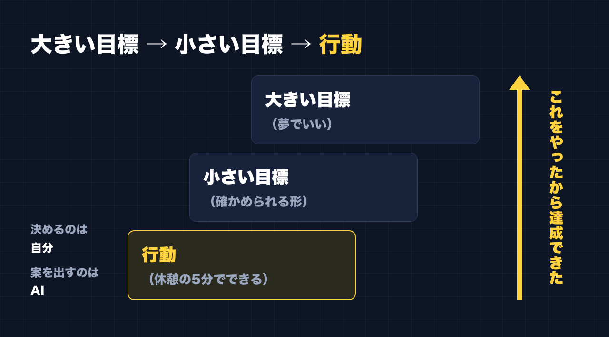
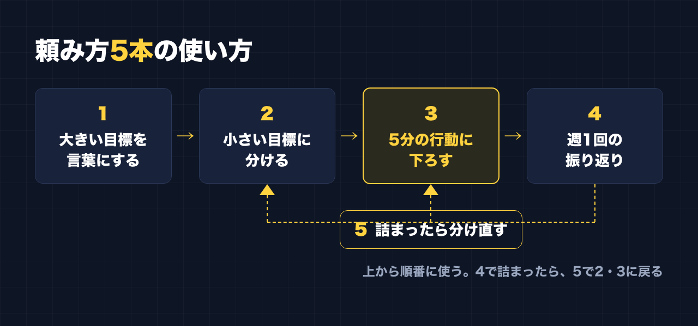
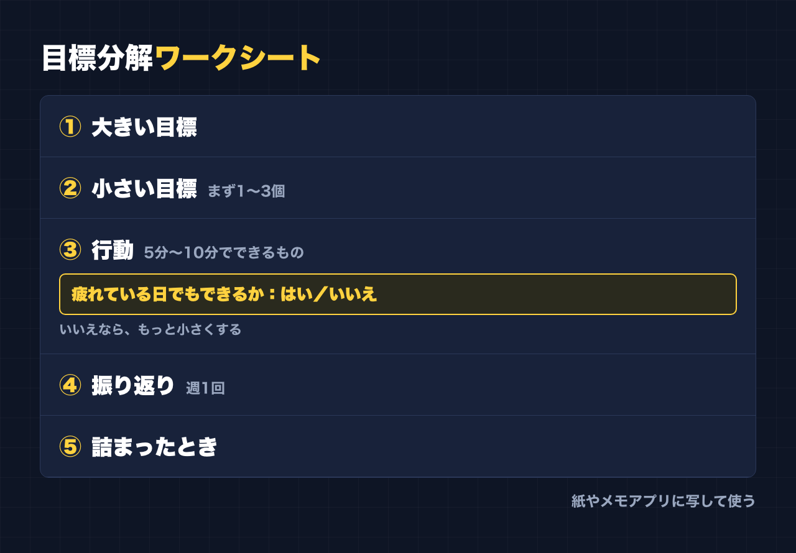

1. タイトルをコピーして、note のタイトル欄に貼る
2. 「本文1をコピー」から順にコピーし、note の本文に貼る
3. 青いラベルの位置に、images フォルダの同じ名前の画像を入れる（本文には貼られません）
※ 見出しが普通の文字になった場合は、その行を選んで「大見出し」を設定してください
「『なんとなく達成できた』じゃなくて、『これをやってきたから達成できた』にしてほしいんです」
仕事で人に教える側に立つとき、目標の話になると、私はよくこう話します。
大きい目標を持つ。そのための小さい目標を持つ。小さい目標のための行動を考える。
話すのは簡単です。でも、いざ自分でやろうとすると、どこから手をつけるかで迷いやすいところです。
私の大きい目標は、脱サラです。できれば月100万。これは夢として書いています。今の私は会社員で、脱サラはまだ遠いです。
この「大きすぎる夢」を、今日の行動まで下ろすのが、いちばん難しい。大きい目標と今日の行動の間が、空白になってしまうんです。
副業を始めたころ、私は「帰宅したら毎日1〜2時間やる」と決めました。でも疲れてできず、できない自分に落ち込みました。今は、休憩の合間の5分、10分でやっています。そうしてから、続いています。
行動は、続けられる大きさまで小さくしないと意味がない。これは自分の失敗から分かったことです。
この記事は、研修で話してきた「大きい目標 → 小さい目標 → 行動」の考え方を、AI と一緒に進められる手順にまとめたものです。
この記事で手に入るもの
- 目標分解の考え方（大きい目標 → 小さい目標 → 行動）と、AI に任せること・自分で決めることの線引き
- そのままコピーして使える、AI への頼み方（5本）
- 大きい目標を言葉にする
- 小さい目標に分ける
- 休憩の5分でできる行動まで下ろす
- 「これをやったから」を残す振り返り
- 詰まったときに分け直す
- 紙やメモアプリに写して使える、目標分解ワークシート（箇条書き）
- 考え方を説明するための記入例（架空の例）
- やりがちな失敗と、その避け方
こんな人に向いています
- 「脱サラしたい」「副業で稼ぎたい」など、大きい目標はあるけれど、今日何をすればいいか分からない
- 目標を立てても、気合いの計画になって続かない
- スマホの AI を持っているけれど、目標づくりに使ったことがない
- 達成したときに「なぜうまくいったか」を説明できるようにしたい
向いていない人
- 稼げる方法や、収入の見込みを知りたい人
→ この記事は目標の分け方の手順です。収入を約束するものではありません。私自身も、脱サラはまだ遠いです
- AI に目標を決めてもらいたい人
→ 目標を決めるのは自分です。AI は、分けるのを手伝う係です
- すでに自分なりの目標管理のやり方が回っている人
→ 新しいことは少ないと思います
――――ここから有料――――
1. 最初に決めておく考え方
AI に頼む前に、この記事の土台になる考え方を4つ書いておきます。どれも、私が研修で話していることです。
大きい目標 → 小さい目標 → 行動
大きい目標だけだと、今日何をすればいいか分かりません。行動だけだと、それが何につながっているか分かりません。
間に小さい目標を挟むことで、「この行動は、この小さい目標のため。この小さい目標は、あの大きい目標のため」とつながります。
つながっていれば、達成したときに「これをやってきたから達成できた」と言えます。うまくいかなかったときも、どこを直せばいいか分かります。
死ぬこと以外は、やり直せる
分けた目標がうまくいかなくても、やり直せます。
だから、最初から完璧に分けようとしなくていいです。分けて、やってみて、合わなければ分け直す。この記事のプロンプト5は、そのためのものです。
脳は省エネしたがる。だから確認する
脳は、聞いたことがある話・見たことがある気がする話だと、「もう知ってる」とサボりがちです。
AI が出してくる目標や行動は、どれももっともらしく、どこかで見たことがある形をしています。だからこそ、そのまま受け取らずに「これは本当に自分の行動か？」と確かめる工程を入れます。
AI は「下書き係」。決めるのは自分
AI に頼むのは、案を出すところまでです。
- 大きい目標を決めるのは、自分
- どの小さい目標を選ぶかも、自分
- 行動を実際にやるのも、自分
AI は、自分ひとりだと空白になりがちな「間」を埋める案を出してくれます。その中から選んで、直して、自分のものにします。

2. 始める前に：AI に入れない情報
目標の話には、仕事や生活の事情が入りやすいです。スマホの AI に入れた内容は、外のサービスに送られます。次のものは入れないか、置き換えてから入れてください。
- 人の名前（家族・同僚・お客さん）
- 会社名・部署名・取引先名
- 住んでいる地域が分かる情報
- 具体的な収入・貯金・借金の金額（必要なら「少ない」「足りない」くらいに）
私も、正式な会社の資料を AI に頼むときは、実名や社名を「Aさん」「ある会社」に置き換えています。目標の話でも同じです。
3. コピペ用の頼み方（5本）
【 】の中を自分の内容に書き換えて、そのまま AI に貼ってください。上から順番に使う想定です。

プロンプト1：大きい目標を言葉にする
最初は、大きい目標をはっきりさせます。ここで大事なのは、夢は夢として置いておくことです。
あなたは、目標を整理するのを手伝うアシスタントです。
私の大きい目標を、言葉として整理するのを手伝ってください。
・今、頭にある大きい目標：【例：会社を辞めて、自分の仕事で食べていきたい】
・なぜそうしたいか：【思いつくまま箇条書き】
・今の自分の状況：【例：会社員。平日は疲れていて、使えるのは休憩のすきま時間くらい】
お願いしたいこと：
1. 私の大きい目標を、一文で3パターン言い換えてください
2. それぞれ、「何ができたら達成と言えるか」を一言添えてください
3. 質問が必要なら、先に3つまで質問してください
守ってほしいこと：
・収入や期間の見込みを、あなたから出さないでください
・「必ずできる」「誰でもできる」のような言い方はしないでください出てきた3つから、自分がいちばんしっくりくるものを選びます。AI の言い方をそのまま使わず、自分の言葉に直してから次に進んでください。
プロンプト2：小さい目標に分ける
大きい目標と今日の行動の間を埋める、小さい目標を出してもらいます。
次の大きい目標を、小さい目標に分けてください。
・大きい目標：【プロンプト1で選んで直した一文】
・今の自分の状況：【プロンプト1と同じでよい】
お願いしたいこと：
1. 大きい目標に近づくための小さい目標を、5〜7個出してください
2. 小さい目標は、「できたか・できていないか」を自分で確かめられる形にしてください
3. 取り組む順番の案をつけてください。順番の理由も一言ずつ
4. 私の状況だと、時間やお金の負担が大きすぎるものには印をつけてください
守ってほしいこと：
・お金を払って講座や道具を買う前提の目標は、最初のほうに置かないでください
・収入の見込みは書かないでください「できたか・できていないか確かめられる形」がポイントです。「頑張る」「意識する」は、確かめられないので小さい目標になりません。
出てきた中から、まず取り組むものを1〜3個だけ選びます。全部やろうとしないでください。
プロンプト3：休憩の5分でできる行動まで下ろす
ここがいちばん大事なところです。私が「毎日1〜2時間」で失敗したのは、行動が大きすぎたからでした。
次の小さい目標のための、具体的な行動を考えてください。
・小さい目標：【プロンプト2で選んだもの1つ】
・使える時間：【例：昼休みや休憩の合間の5分〜10分。帰宅後は疲れていて、あてにできない】
・使えるもの：【例：スマホ。AIアプリ。メモアプリ】
お願いしたいこと：
1. 5分〜10分で終わる行動を、10個出してください
2. 1つの行動は、「何を・どこで・どれくらい」が分かる一文にしてください
3. 疲れている日でもできそうな順に並べてください
4. それぞれ、どの小さい目標のためか、つながりを一言書いてください
守ってほしいこと：
・「毎日1時間」など、まとまった時間が必要な行動は出さないでください10個の中から、明日やるものを1つだけ決めます。
出てきた行動を見て「これは自分の行動か？」と確かめてください。AI の案は、どこかで見たことのある形をしていて、つい「よさそう」とうなずいてしまいます。自分の生活の中で、本当に5分でできるかを考えてから選びます。
プロンプト4：「これをやったから」を残す振り返り
「なんとなく達成」にしないための振り返りです。週に1回くらい、やったことをメモして AI に渡します。
今週やったことを振り返るのを手伝ってください。
・大きい目標：【一文】
・今取り組んでいる小さい目標：【1〜3個】
・今週やった行動（メモのまま）：【例：月曜 休憩で下書き1本／水曜 できなかった／金曜 下書き1本】
・結果や気づき：【あれば】
お願いしたいこと：
1. やった行動と、小さい目標とのつながりを整理してください
2. 「これをやったから、ここまで進んだ」と言える部分を、事実だけで書き出してください
3. つながりが見えない行動があれば、指摘してください
4. 来週、続けること・やめること・変えることを、1つずつ提案してください
守ってほしいこと：
・私のメモにないことを、やったことにしないでください
・励ましの言葉はいりません。整理だけしてください最後の「励ましはいらない」は入れておくのがおすすめです。入れないと、AI が「素晴らしいですね」と言ってくれて、それで満足して終わりがちです。
もうひとつ。振り返りを AI に丸投げする前に、まず自分で「今週は、これをやったから、ここまで来た」を一文書いてみてください。研修で「ただ聞くだけより、誰かに教えるつもりで聞くと定着する」と話しているのですが、振り返りも同じで、自分で説明しようとすると、分かっていないところがはっきりします。自分の一文を書いてから、AI の整理と見比べます。
プロンプト5：詰まったときに分け直す
うまくいかないとき、目標そのものが悪いとは限りません。多くの場合、分け方が大きすぎるか、順番が合っていません。
目標に向けて進めていましたが、詰まっています。分け直すのを手伝ってください。
・大きい目標：【一文】
・取り組んでいた小さい目標：【】
・やろうとしていた行動：【】
・詰まっていること：【例：2週間、ほとんど手がつかなかった】
・理由として思い当たること：【例：思っていたより時間がかかる。何から手をつけるか毎回迷う】
お願いしたいこと：
1. 行動が大きすぎないか、今の私の状況に合っているかを確認してください
2. 行動を、さらに半分以下の大きさに分けた案を3つ出してください
3. 小さい目標の順番を入れ替えたほうがいいなら、その案を出してください
4. 大きい目標は変えずに進められる方法を、先に考えてください
守ってほしいこと：
・「もっと頑張りましょう」のような気合いの話はしないでください
・新しくお金を払う方法は、最後の選択肢にしてください詰まるのは失敗ではありません。死ぬこと以外は、やり直せます。分け直せばいいだけです。
4. 目標分解ワークシート
紙やメモアプリに写して使ってください。プロンプト1〜5の結果を、ここに書き込んでいく想定です。
① 大きい目標
- 一文で：
- 何ができたら達成と言えるか：
- これは夢か、見込みか：（夢でいい。夢なら夢と書いておく）
② 小さい目標（まず1〜3個）
- 小さい目標A：
- できたかどうかの確かめ方：
- 小さい目標B：
- できたかどうかの確かめ方：
- 小さい目標C：
- できたかどうかの確かめ方：
③ 行動（5分〜10分でできるもの）
- 行動：
- どの小さい目標のため：
- いつやるか（例：昼休み、休憩の合間）：
- 疲れている日でもできるか：はい／いいえ（いいえなら、もっと小さくする）
④ 週1回の振り返り
- 今週やったこと：
- 「これをやったから、ここまで来た」と言える一文：
- 続けること：
- やめること：
- 変えること：
⑤ 詰まったとき
- 詰まっているのは、どの行動か：
- 半分の大きさにすると：
- 順番を変えるなら：

5. 記入例（架空の例）
考え方を分かりやすくするための、架空の例です。私の目標をこの通りに立てている、という話ではありません。数字も、見込みや約束ではありません。
① 大きい目標
- 一文で：会社員を続けながら、発信で少しずつ自分の仕事をつくる
- 達成と言えるか：自分の発信から、最初の1件の申し込みがある
- 夢か、見込みか：夢
② 小さい目標
- 小さい目標A：自分の強みを、1行で人に説明できるようにする
- 確かめ方：知らない人に向けた1行の自己紹介が書けている
- 小さい目標B：発信を、決めた期間続ける
- 確かめ方：決めた期間の投稿の記録が残っている
③ 行動
- 行動：昼休みに5分、スマホで投稿の下書きを1本書く
- どの小さい目標のため：B
- いつやるか：昼休み
- 疲れている日でもできるか：はい
- 行動：週に1回、自己紹介の1行を書き直す
- どの小さい目標のため：A
- いつやるか：休憩の合間
- 疲れている日でもできるか：はい
④ 振り返り
- 「これをやったから」の一文：昼休みの5分で下書きを書いていたから、今週は投稿が途切れなかった
こんなふうに、①から③までが一本の線でつながっていれば、④の一文が書けます。
6. やりがちな失敗と、その避け方
- 大きい目標から、いきなり行動を出してしまう → 間に小さい目標を挟む。プロンプト2を飛ばさない
- 行動が大きすぎる（「毎日1時間」など） → 疲れている日でもできる大きさまで下げる。私はここで一度失敗しています
- AI の案をそのまま全部採用する → 選ぶのは1〜3個。自分の生活でできるかを確かめてから選ぶ
- AI に収入の見込みを出させて、それを目標にしてしまう → 見込みは AI にも分かりません。プロンプトの「守ってほしいこと」を消さない
- 振り返りをしない → 「なんとなく」に戻ります。週1回、プロンプト4だけはやる
- 詰まったら目標ごと捨てる → まず行動を半分にする。プロンプト5を使う
- お金を払えば進むと思ってしまう → 私は最初に約80万円の講座に入り、成果は出ませんでした。払う前に、「それで毎日何をするか」を行動の形で書けるか確かめる
おわりに
大きい目標は、夢でいいと思っています。私の脱サラも、月100万も、今は夢です。
ただ、夢のままだと、今日は何も変わりません。
大きい目標を決めるのは自分。間を埋める案を出すのは AI。選んで、やって、振り返るのは自分。
まずはプロンプト1だけ、今日の休憩の5分でやってみてください。
ここからは宣伝です。
公式LINEでは、「特典」と送っていただくと、LINE限定のプロンプト5本をお届けしています。
https://lin.ee/RzyA13P
「副業ドラフト」は、AI の質問に答えるだけで、副業に使える強みの棚卸しと Threads の下書きを作るツールです。Threads の下書き3本までは無料で使えます。
https://note-threadssf.onrender.com
Threads では、こうした試行錯誤を日々発信しています。
https://www.threads.com/@shachiku_mao
最後まで読んでいただき、ありがとうございました。